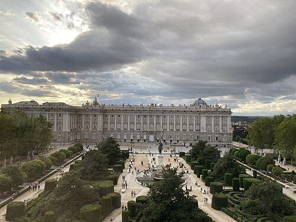
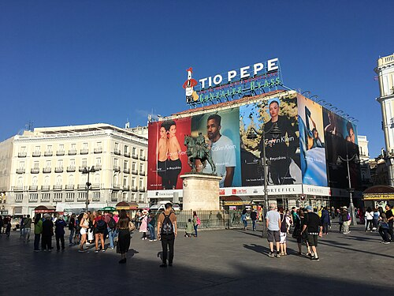
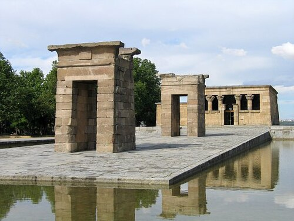

This map shows 20 of the most-searched sights in Madrid as photo spots, ranked by how often people search for them: Royal Palace, Puerta del Sol, Mercado de San Miguel, Temple of Debod and Puerta de Alcalá lead the list. Every spot has a pin on the subject and a phone icon showing where to stand, with tips for shooting it on your phone: which lens to use, how to frame it, a settings tip and the best time of day. Directions and Navigate buttons take you to the standing point on foot or by public transport. 3 spots are free to view; the full map is for members.
The 3 free photo spots
1Royal Palace of Madrid

The Royal Palace of Madrid is the official residence of the Spanish royal family, though it is used mainly for state ceremonies rather than as a home. It is also the largest palace in Western Europe, with 3,418 rooms. The Alcázar, built on the site of a Muslim-era fortress, burned down on Christmas Eve 1734, and the present building went up between 1738 and 1755. The north side is where it photographs best. The Jardines de Sabatini lie along that facade, on ground once used for the royal stables, and their clipped hedges and still water give you a tidy, symmetrical foreground. The palace itself is built from grey granite and white limestone, so it reads as a calm, pale block against the sky and stays clear on a small screen. From the gardens you can fit the long facade, the hedges and the reflecting pool into one frame. In late afternoon the stone takes on a warm glow and the sky has more colour. Stand back from the pool so the water adds depth without crowding the picture. If you have time for a second angle, the Campo del Moro on the west side shows the palace rising above lawns and a fountain. Whichever spot you choose, take a few frames and compare them later.
Where it is: The palace stands on Calle de Bailén in the western part of central Madrid, east of the Manzanares River and close to the Plaza de Oriente. The Jardines de Sabatini run along its north side.
Shooting it on your phone
Lens: Start with the default lens (1x) for the facade and pool together. Switch to ultra-wide (0.5x) if you want the whole width of the hedges and water, and use telephoto (2x or more) for details of the stonework.
Where to stand: Stand in Jardines de Sabatini (north side of the palace, reached along Calle de Bailén). The palace's north facade framed by symmetrical hedges and a reflecting pool in the foreground, with the best light in late afternoon or at sunset. On the north side of the palace, reached along Calle de Bailén.
Framing: Turn on the gridlines and keep the palace centred, so the symmetry of the hedges and pool looks deliberate. Crouch a little to bring the water into the lower part of the frame. For a different view, the Campo del Moro shows the palace's western facade above the lawns, and you can often frame it to keep trees out.
Settings tip: Tap the palace stonework to focus, then slide the exposure down a touch so the sky keeps its colour and the pale limestone does not turn white. Keep the phone level, because tilted verticals are obvious on such a formal building.
Best time: Late afternoon or sunset, when the stone glows and the sky has more colour. Arrive a little before dusk, as the gardens may close then.
2Puerta del Sol

Puerta del Sol is one of Madrid's best-known and busiest squares, and it is easy to see why people photograph it. The plaza opens out in a gentle semicircle, with the old Post Office (the Casa de Correos) and its clock tower closing the view. The name means "Gate of the Sun". It comes from a gate in Madrid's 15th-century city wall, which faced east and was decorated with a rising sun. The clock is the one whose bells mark the Twelve Grapes at New Year. The Post Office building was designed by Jacques Marquet and built between 1766 and 1768. Set into the pavement in front of it is the Km 0 plaque, the point from which Spain's road distances are measured. On the east side of the square, the bronze bear reaching up to the strawberry tree is the symbol of Madrid. Until 2009 it stood on the north side, so check its exact position on the map. Since 2020 the square has been pedestrianised, so you can step back and frame your shot without worrying about traffic. The most popular photo is taken from the west end, where you enter from Calle del Arenal, looking east across the plaza to the clock tower. The square is almost always crowded, so go early in the morning if you want a cleaner shot. A second good picture is the bear with the busy square behind it.
Where it is: Puerta del Sol is in the very centre of Madrid, in the old town. The Plaza Mayor is just to the southwest, and the Palacio Real is further west.
Shooting it on your phone
Lens: Start with the ultra-wide (0.5x) for the whole square. Use the default lens (1x) for the bear and the Km 0 plaque. Try telephoto (2x or more, depending on your phone) to pick out the clock tower.
Where to stand: Stand in Puerta del Sol (west end, entering from Calle del Arenal). The semicircular plaza opening eastward, with the Casa de Correos clock tower as the backdrop. From here you look east across the semicircular plaza, with the Casa de Correos clock tower as the backdrop. The bear statue is to the east of this spot, so walk over to it for a closer shot.
Framing: Switch on the gridlines and line the clock tower up with the centre of the frame. Keep the horizon level so the buildings do not lean. For a second picture, go to the bear and frame it against the square's activity. Or find the Km 0 plaque in the pavement with the Casa de Correos building behind it.
Settings tip: Tap the clock tower to focus and lower the exposure slider a little if the sky looks washed out. At the ultra-wide setting, keep people out of the edges of the frame, where faces can look stretched. In the evening, use night mode and hold the phone steady against your body.
Best time: Early morning, when the square is relatively empty and the low eastern sun lights the Casa de Correos.
4Temple of Debod

The Temple of Debod is an ancient Nubian temple that now stands in Madrid's Parque del Oeste, close to the Royal Palace. It was first built in the early 2nd century BC, about 15 km south of Aswan in Egypt, and was later extended to a small temple of roughly 12 by 15 metres. Egypt gave it to Spain in 1968 as thanks for help in saving monuments threatened by the Aswan High Dam. It was taken apart and rebuilt here in 1970–1972, and it opened to the public in 1972. It is the only Egyptian temple of its kind in Spain.
It photographs well because the pale stone gateways and temple sit in an open space with a shallow reflecting pool in front. On a calm day the pool doubles the temple, with sky and the Casa de Campo hills behind.
The pool's south edge is a good place to get the whole temple and its reflection without people walking through the frame. For a different picture, the viewpoint beside the temple looks over the treetops towards the Royal Palace. One guide suggests a wider view of the temple from elsewhere in Parque del Oeste, with fewer people in the shot. The pool is sometimes partly drained for maintenance, so look at recent visitor photos if the reflection matters to you.
Where it is: The temple stands in the Parque del Oeste, on the western side of central Madrid, a short walk from the Royal Palace.
Shooting it on your phone
Lens: Start with the default lens (1x) for the temple and its reflection together. Switch to the ultra-wide (0.5x) if you want more sky and pool, or if you are close and the building will not fit. Use telephoto (2x or more) for the carved gateway details.
Where to stand: Stand right at the subject (west side, along the south edge of the reflecting pool). The temple's western facade mirrored in the still shallow pool, with the sky and the Casa de Campo hills behind it. Go to the Templo de Debod, on the west side, along the south edge of the reflecting pool. From here the temple's western facade is mirrored in the still water, with the sky and the Casa de Campo hills behind it.
Framing: Crouch and hold the phone low, close to the water, so the reflection fills the lower half of the picture. Turn on gridlines and place the water's edge on a lower line so the temple and its reflection stay level. If you want a different view, the viewpoint beside the temple looks over the treetops towards the Royal Palace.
Settings tip: Tap the temple to set focus, then slide the exposure down a little so the sky keeps its colour and the stone does not wash out. Wait for ripples to settle and take a few frames.
Best time: About 30 to 60 minutes before sunset, or early morning on a still day when the water is calmest.
17 more spots for members
These spots are on the map as grey numbered pins. Where to stand, the phone tips, photos and directions for them come with Explorer membership.
- 3Mercado de San Miguel · members
- 5Puerta de Alcalá · members
- 6Plaza Mayor · members
- 7Retiro Park and the Crystal Palace · members
- 8Gran Vía and the Metropolis Building · members
- 9Almudena Cathedral · members
- 10Plaza de Cibeles · members
- 11Madrid Río and the Toledo Bridge · members
- 12Sabatini Gardens · members
- 13Puerta de Toledo · members
- 14Campo del Moro · members
- 15Plaza de Oriente · members
- 16Plaza de España · members
- 17Plaza de la Villa · members
- 18Círculo de Bellas Artes rooftop · members
- 19Arco de Cuchilleros · members
- 20Basilica of San Francisco el Grande · members
Get every spot with Explorer membership
Explorer opens every spot on every map in the library: where to stand, how to frame it on your phone and how to get there, plus the Xdatrys Maps app with maps saved on your phone for use without signal. $9.99 a month or $59.99 a year; cancel any time.
Join Explorer Compare free and Explorer
Not ready to join?
Get Pocket Lens, our free daily smartphone travel photography newsletter.
Free, and you can unsubscribe at any time. If the form does not show, sign up on our newsletter page.
Questions
What are the top photo spots in Madrid?
The first three on this map are Royal Palace, Puerta del Sol and Mercado de San Miguel. They are ranked by how often people search for them. The full map has 20.
Where should I stand to photograph the Royal Palace?
Stand in Jardines de Sabatini (north side of the palace, reached along Calle de Bailén). Start with the default lens (1x) for the facade and pool together.
When is the best time to photograph Puerta del Sol?
Early morning, when the square is relatively empty and the low eastern sun lights the Casa de Correos.
How do I get to the Temple of Debod?
From Príncipe Pío Metro station (Metro line 10, Metro line 6 and Metro line R) head north-east; it is about 380 m on foot.
Credits
Map data © OpenStreetMap contributors (ODbL); base map built with Protomaps from OpenStreetMap data. Photos from Wikimedia Commons, credited under each photo with their licence. Background reading for the free spots: Royal Palace of Madrid, Puerta del Sol, Temple of Debod (Wikipedia, CC BY-SA). Access rules and opening times change: check before you go.